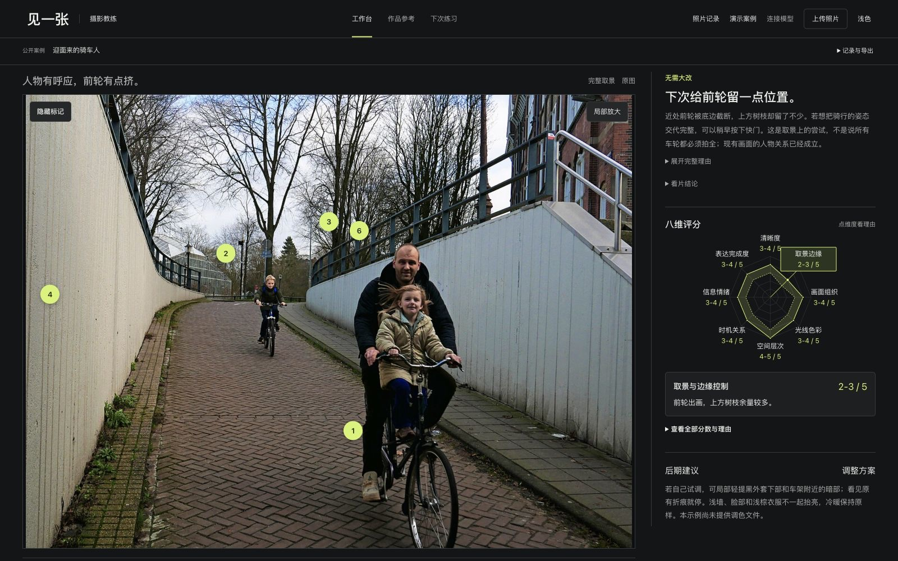

摄影学习工具
上传自己的照片，
找到具体的改法。
实际运行界面工作台

示例摄影：Fons Heijnsbroek，原作品，CC BY-SA 4.0。照片未裁切或调色；截图加入界面与点评。作者未背书。

报告内容
点评包含哪些内容
从全画面分析中找出主要问题，说明哪些部分值得保留、哪些可以调整。
A
独立工作台，不需要 Codex
使用 Python 3.11+，在已获取的项目根目录运行：
python3 scripts/open_workbench.py --setup自动打开可用的本机地址，重复运行复用原服务；缺依赖时仅在项目虚拟环境安装。可免配置看演示，使用自己的照片时再连接自己的模型 API。请获取 main 分支的实验版；真实 API 尚待验收，实时参考检索尚未接入。
B1
也可以在 Codex 中使用 Skill
需要 Git 和能查看图片的 Codex。macOS / Linux 只克隆一份主项目，用链接连接技能入口；已有同名目录时先保留自己的改动。
git clone https://github.com/judefluen-coder/photography-coach.git ~/photography-coach
mkdir -p ~/.codex/skills
ln -s ~/photography-coach ~/.codex/skills/photography-coachB2
让 Skill 打开 Web 应用
请用 $photography-coach 打开摄影教练。
Skill 从安装位置启动同一个工作台，无需先发照片。安装本身不会启动后台服务；打开和演示不调用模型，Web 点评仍使用你自己的 API。
B3
在页面上传，或继续对话点评
页面中查看演示、上传照片并配置模型。也可以直接在 Codex 附图说「请用 $photography-coach 点评这张照片」，原有对话方式保留。
Skill 不附带模型或修图服务；调用费用与数据处理取决于你使用的服务及权限。生成的报告可保存在本地，这不等于 AI 处理全程离线。
问题反馈
发现点评错误或使用问题？
请附上原话、对应的画面位置，或出现问题的操作步骤。
只分享有公开授权的材料，不上传私人照片。